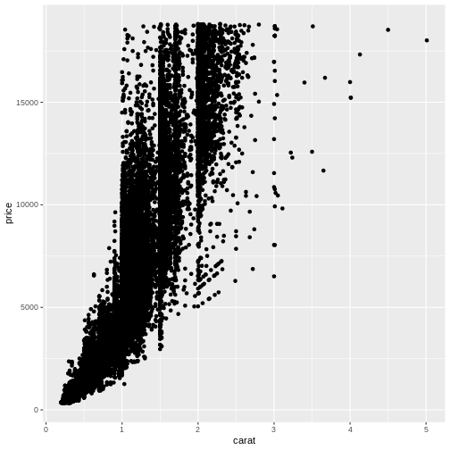

Further mapping
Last updated on 2025-03-07 | Edit this page
Estimated time: 15 minutes
Overview
Questions
- “Can we show data using something other than position?”
- “What is correct, colour or color?”
- “How do I find out what a
geom_can do?”
Objectives
- “Learn to plot more than just positions”
We saw how to map data to a position in a scatterplot. But we are able to map the data to other elements of a plot, eg the color of the points.
R
ggplot(data = diamonds, mapping = aes(x = carat, y = price, colour = color)) +
geom_point()
The argument to which we are mapping the values in the column color is also called colour, making the code look a bit weird.
Are these colours suitable? Probably not. The authors of this course material are not able to distinguish all of the colours. We will return to how to change colours in plots later in this course.
Spelling
Color, and some other words can be spelled in more than one way. For arguments ggplot understands both the correct english spelling colour and the american spelling color.
Note that this only applies to the arguments in the functions. If the column in the dataset is called color ggplot will not find it if you write colour instead.
Not surprisingly, the “best” color, D have higher prices than the “worst” color, “J”.
A common mistake is to place the color argument a wrong place:
R
ggplot(data = diamonds, mapping = aes(x = carat, y = price), colour = color) +
geom_point()
 What happened to the colour? The colour argument is outside the aes() function. That means that we are not mapping data to the colour!
What else can we map data to?
More or less every phenomenon in a scatter plot can have data mapped to it, eg. the size of the points:
R
ggplot(data = diamonds, mapping = aes(x = carat, y = price, colour = color, size = table)) +
geom_point()
Not at good plot… We need to think about the combination of stuff we want to plot. Often two plots are better than trying to cram everything into a single plot.
What can be mapped to the plot depends on the geom we are using.
Calling the help function, eg ?geom_point, on a geom
will provide insight on that question. Doing it on the
geom_point() function, reveals that x and y are mandatory
because they are in bold.
The list of stuff we can map data to in geom_point:
- x
- y
- alpha
- colour
- fill
- group
- shape
- size
- stroke
Different geom_ functions have different mandatory/required aesthetics.
Not really mapping. Sorta.
Rather than mapping values from data to an aesthetic, we can provide
values directly. One very useful aesthetic to play with, at least when
we have as many datapoints as we have here, is alpha:
R
ggplot(data = diamonds, mapping = aes(x = carat, y = price, color = color)) +
geom_point(alpha = 0.1)
alpha controls the transparency of the points plotted,
and is a handy way of handling overplotting, the phenomenon that
multiple data points might be identical. In this example we set
alpha to be 0.1, we could have mapped a variable to it
instead.
geoms
geom_point() is the function we use to make scatter plots; because points is a geometric object. Other geometric objects can be plotted:
- geom_histogram() will plot histograms
- geom_line() will plot lines
All geometries in ggplot2 are named using the pattern geom_
Using shapes in the plot
Shapes can be useful if we want to make plots that are robust in regards to colour reproduction on screens, in printers or for people with reduced colour vision. In principle we can plot any kind of shape. But without having to program them ourself, these are available directly in ggplot. They are numbered, because it is easier to write “14” than “square box with upwardspointing triangle inside”.
Key Points
- “Data can be plottet as something other than position”
- “Types of plots are determined by
geom_functions”